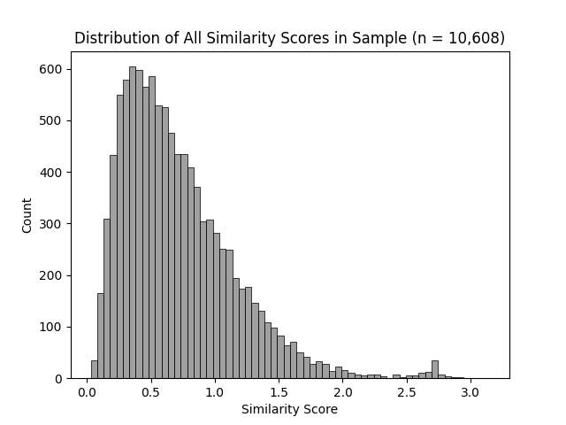
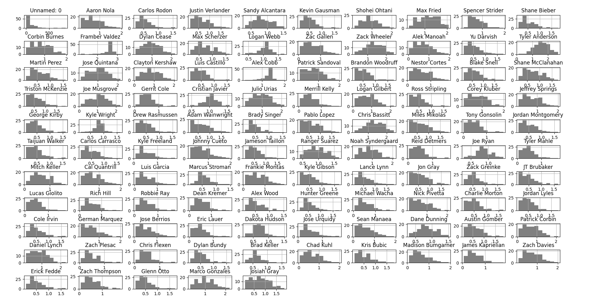
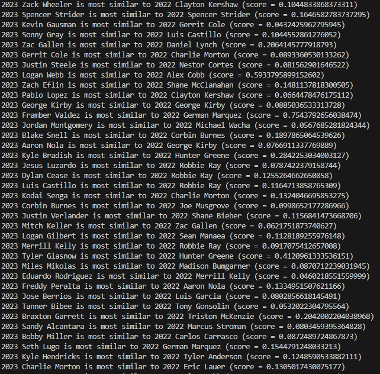
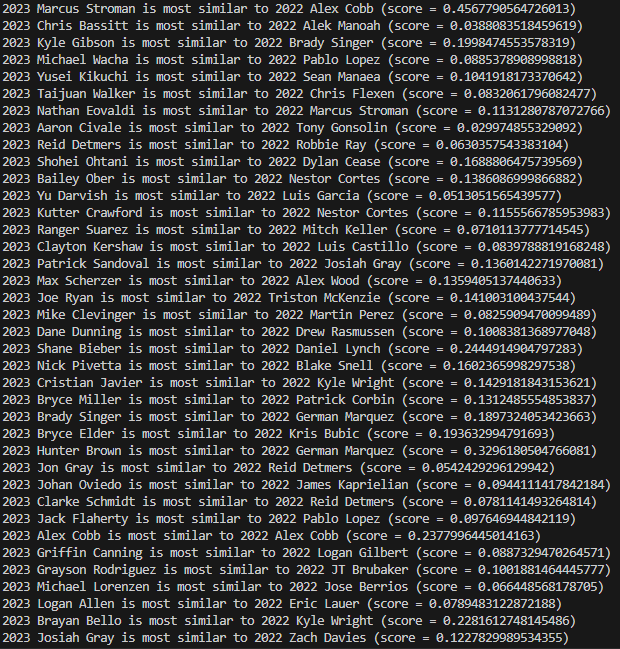
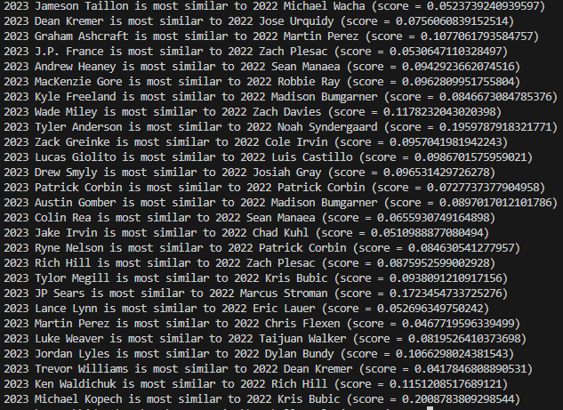

A New Approach to Pitcher Similarity Scores
by A. Kline
Posted on 04/12/2024
In the 1980s, famed sabermetrician Bill James introduced a metric called the similarity score. As the name implies, this stat compares two players and returns a single number–the higher the number, the more similar the players. Of course, the idea of comparing two baseball players is nothing new–it’s as old as baseball itself. But James was the first person to quantify player player similarity in a simple, meaningful way.
The idea behind the calculation–which is listed in the link above–is quite interesting. Basically, you start at 1000 and subtract numbers based on how different the players are in different statistical categories, e.g. batting average for hitters and ERA for pitchers, with more important metrics weighted more heavily in the similarity score calculation. This works for a primitive, back-of-the-napkin calculation for how similar two players are, but unfortunately it’s not the most perfect or mathematically grounded baseball stat in the world.
In 2003, statistician Nate Silver developed PECOTA, Baseball Prospectus’s proprietary player forecasting model that is still used today*. Though the exact inner workings of the system are still not known to the greater public, it is known that PECOTA makes use of something called nearest neighbor analysis–which in this context basically means looking at a variety of different stats between two players, calculating the difference between each of them, and aggregating the result into some kind of distance, such that the smaller the distance, the more similar the players. More recently, Baseball Prospectus has experimented with measuring pitcher similarity by looking at pitch arsenals–though this gets even more complex and to some extent defeats the point of having an easy, somewhat-intuitive similarity score system.
So what’s my goal here? Well, long-time readers might remember how last year, I wrote a post introducing a metric called defense-aware ERA (DAERA).This statistic looks at four metrics that are most within the pitcher’s control–strikeout rate, walk rate, average exit velocity, and launch angle optimality–and weighs them into one ERA-like stat that is a better predictor of future ERA than FIP, SIERA, and even Statcast’s xERA. Now, I want to combine the four ingredients of DAERA mentioned before into a new similarity score for pitchers, which I believe can be a potential tool for forecasting future pitcher performance.
I think the best way to introduce this new similarity score metric will be to build up to it, starting with the very definition of geometric distance:
Distance((x_1, y_1), (x_2, y_2)) = sqrt((x_1 - x_2)^2 + (y_1 - y_2)^2)
However, as you might have noticed, we have four metrics we want to compare, not just two. Luckily for us, the Pythagorean distance formula works in n dimensions, as follows:
Distance((x_1, y_1, …, n_1), (x_2, y_2, …, n_2)) = sqrt((x_1 - x_2)^2 + (y_1 - y_2)^2 + … + (n_1 - n_2)^2)
This 4-dimensional version of this formula will be the base of our similarity score, although there is still one more change I want to make to it. As it stands, the formula weighs all components of each player equally–meaning something like strikeout rate is weighed identically to something like launch angle optimality. However, I showed in my DAERA post that not all of these factors are equally important when it comes to predicting future performance. Specifically, all of the components were given linear weights in the DAERA formula as follows:
| Metric | DAERA Weight |
| K% | -7.07 |
| BB% | 7.05 |
| AvgEV | 0.14 |
| LAO | 0.13 |
We can use these weights to roughly proportion the components in the distance formula by relative importance. So here is the player similarity formula I came up with**:
Similarity(Pitcher_1, Pitcher_2) = sqrt(7.07*(K%_1 - K%_2)^2 + 7.05*(BB%_1 - BB%_2)^2 + 0.14*(AvgEV_1 - AvgEV_2)^2 + 0.13*(LAO_1 - LAO_2)^2)
One major difference between this and, say, the Bill James similarity scores you see on Baseball Reference, is that lower numbers mean more similar pitchers, not higher. That’s because, on a fundamental level, we’re measuring “distances” between pitchers in the four-dimensional space of strikeout percentage, walk percentage, average exit velocity, and launch angle optimality.
As I mentioned earlier, I think this metric could be useful for projecting future pitcher performance. So I decided to put this metric to the test, operating under the following assumption: If we looked at the similarity between Pitcher X’s 2023 performance and Pitcher Y’s 2022 performance, then we might get a rough idea of Pitcher X’s 2024 performance by looking at Pitcher Y’s 2023 performance. I therefore looked at all pitchers who had at least 120 IP in 2023, and compared them to all pitchers who had at least 120 IP by similarity score. The full dataset is available here***.
This left us with over ten thousand similarity scores to analyze. First, I put them all on a histogram to see how they’re distributed.
The distribution of similarity scores between two qualified pitchers is right-skewed, with the vast majority of values below 1.0, but a handful below 2.0.
Though the frequency of similarity scores peaks around 0.5, it tails off somewhat gradually above that, but drastically below that. This implies that two pitchers in this sample are, on average, not too dissimilar–which makes some level of sense, because to pitch 120 innings in a single season nowadays, you usually need to be somewhat decent at pitching. However, the distribution of similarity scores varies greatly by pitcher.
As measured by similarity score, some pitchers are quite typical, while a select few are quite atypical. Note that the graphs above represent 2022 seasons. Also, I apologize for the resolution of this image–not much I can do about that.
I was surprised to see just how much similarity scores could vary by pitcher among one batch of qualified, generally consistently good pitchers. Some pitchers, such as JT Brubaker and Tony Gonsolin, had 2022 seasons that were very average relative to pitcher seasons in 2023. In contrast, pitchers such as Alex Cobb and (especially) Framber Valdez were dissimilar to nearly every pitcher season in 2023.
I then decided to look at all qualified pitchers from 2023 and see which qualified pitchers from 2022 they were most similar to. The results are below.
Pitchers of maximum similarity, part 1. Note how the similarity scores vary widely by pitcher.
In 2023, Gerrit Cole pitched 209 innings to the tune of a 2.63 ERA, 9.6 strikeouts per nine, and 2.1 walks per nine–winning the AL Cy Young Award for his accomplishments. The pitcher from 2022 who Cole is most similar to, Charlie Morton, recorded 172 innings pitched with 10.4 strikeouts per nine and 3.3 walks per nine–though he had an unremarkable ERA of 4.34. Next season, he maintained a similar strikeout rate and his ERA positively regressed to 3.64, despite a moderate increase in walk rate. If Cole returns to pitch this season, and keeps his peripherals in the same ballpark as before, he would probably have an ERA in the mid-3s–not as elite as his 2023 but still very respectable.
The 2023 NL Cy Young winner, Blake Snell, pitched 180 innings with an ERA of 2.25, 11.7 strikeouts per nine, and 5.0 walks per nine. His closest 2022 counterpart, Corbin Burnes, threw 202 innings with 10.8 strikeouts and 2.3 walks per nine, to the tune of a 2.94 ERA. He slightly regressed across the board in 2023, pitching 193.2 innings with 9.3 strikeouts per nine, 3.1 walks per nine, and an ERA of 3.39. Using this trend, we can estimate that Snell, if given enough of a sample size in 2024, will likely regress in performance and see an increase in ERA, especially if his walk rate continues to be concerningly high.
Pitchers of maximum similarity, part 2.
In 2023, Cleveland pitcher Logan Allen threw 125.1 innings with 8.5 strikeouts and 3.4 walks per nine, to the tune of a 3.81 ERA. His closest companion from 2022, Eric Lauer, threw 158.2 innings, allowing 8.9 strikeouts and 3.3 walks per nine innings, with an ERA of 3.69. In 2023, however, Lauer struggled, earning an ERA of 6.56 across only 46.2 innings. This was primarily due to home runs, allowing 3.1 per nine innings despite maintaining nearly the same strikeout and walk rates from the season before. So is it fair to say that Allen is due for the same kind of severe regression? Well, not necessarily–though Allen’s ERA was likely better than it should have been in 2023 according to his peripherals, and will likely regress, he’s unlikely to have his ERA balloon like Lauer. Home run rates are prone to randomness, and even when they due spike for a discernible reason, that is almost always pitcher specific–so it happening to Lauer has next to no bearing on it happening to Allen.
Pitchers of maximum similarity, part 3.
2023 saw Angels pitcher Tyler Anderson throw 141 innings with 7.6 strikeouts and 4.1 walks allowed per nine of them, and had a 5.43 ERA that season. His 2022 counterpart is Noah Syndergaard–who had 6.3 strikeouts per nine, 2.1 walks per nine, and a 3.94 ERA across 134.2 innings pitched. However, Syndergaard struggled in 2023, allowing a 6.50 ERA in 88.2 innings. Like Eric Lauer, this was primarily due to a significant increase in home runs, even when his strikeouts per nine and walks per nine stayed very similar (6.3 to 5.7 and 2.1 to 1.9, respectively). As a result, it’s harder to project Anderson’s future performance while accounting for the home run rates tainting Syndergaard’s 2023. Regardless, though, if Anderson’s peripherals remain roughly where they were in 2023, then he will likely have an ERA well below 5.43.
So, what are my takeaways here? Well, for one, it’s probably better to predict an individual player’s future using an aggregation of similar players, as opposed to just the one most similar. Doing so would account for the extreme variability of one pitcher’s performance by taking an average of several pitchers, smoothing out that variability and hopefully approximating a more accurate average. Regardless, I’m happy that I managed to create and test a new statistic, and I do believe it has some usefulness. Perhaps in the future I’ll return to the subject of similarity scores, either by expanding on my current work or by finding an entirely new approach. So stay tuned.
*Though Nate Silver is most famous today for his political journalism and election forecasting (and potentially his X/Twitter takes), I think it’s worth noting that he got his start in sabermetrics.
**Note that I used the absolute value of the weights here, not the weights themselves. This is to ensure that negative weights do not automatically lower the similarity score, regardless of the actual difference in strikeout percentage.
***The data used here is sourced from Fangraphs unless otherwise noted.